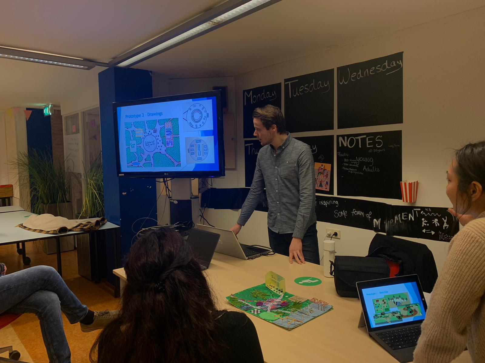

Sluislab Amsterdam

During Climb 3, Folco van der Zon and Cassandra van Waveren organized a prototype
party. During this gathering, every group had the chance to present their prototype
to other classmates and to residents from the Sportheldenbuurt.
This gathering was very useful to interview residents, and to ask them what they
would change or what they would keep. They are the future users after all.
Cassandra also organized an improvisation lesson. The goal of this lesson was
to loosen up a bit during stressed periods, like presentations.